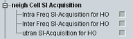

This section indicates whether the UE supports system information requests for handover. When the UE receives such a request, it must use autonomous gaps to read and report the system information of neighbor cells.

Support of system information acquisition for intra-frequency neighbor cells.
Remote command:Support of system information acquisition for inter-frequency neighbor cells.
Remote command:Support of system information acquisition for UMTS neighbor cells.
Remote command: